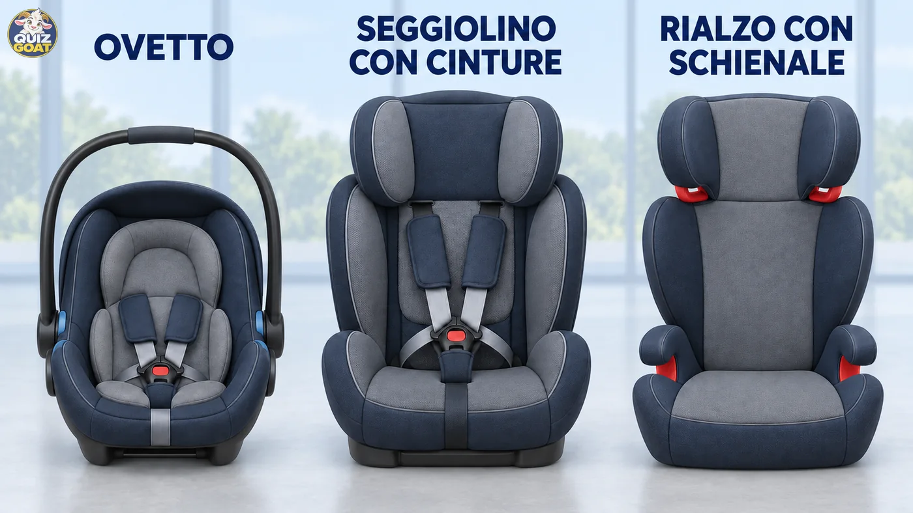

‹ Guide
Cinture e seggiolini
In auto la cintura si allaccia sempre, davanti e dietro. I bambini sotto 1,50 m viaggiano sul seggiolino.
- Cinture
- Conducente e passeggeri le allacciano in ogni situazione di marcia, su tutti i posti che le hanno.
- Bambini
- Sotto 1,50 m di statura viaggiano su un sistema di ritenuta omologato e adatto al loro peso: ovetto, seggiolino con cinture o rialzo con schienale.
- Sotto i 4 anni
- Con il seggiolino serve anche il dispositivo di allarme contro l’abbandono del bambino.
- Airbag
- Il seggiolino rivolto all’indietro non si monta su un sedile con l’airbag frontale attivo. Prima si disattiva l’airbag.
- Taxi e noleggio con conducente
- I bambini fino a 1,50 m possono viaggiare senza seggiolino, ma solo sui sedili posteriori e con un passeggero di almeno 16 anni.
- Chi risponde
- Se il bambino non è assicurato risponde il conducente, oppure chi a bordo deve sorvegliarlo. Dopo due violazioni in 2 anni la patente è sospesa da 15 giorni a 2 mesi.

Queste informazioni riassumono il Codice della strada e le pagine del Ministero delle infrastrutture e dei trasporti, controllati a novembre 2026. Importi e casi particolari cambiano nel tempo: per la tua pratica chiedi in sede.
Preventivo gratuito
Senza impegno. Scrivici o passa in sede: ti diciamo costi, tempi e che cosa portare.